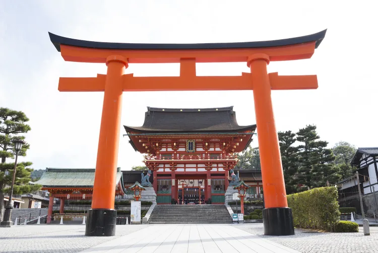

Le shintô est la religion la plus ancienne du pays du soleil levant. On n'en connaît pas l’origine exacte ; c’est pour cet raison que contrairement aux autres croyances telles que le christianisme, le shintô ne possède pas de texte sacré. Le shintoïsme est considéré comme animiste. La vénération des divinités ou des esprits (appelés Kami) qui sont présents dans la nature, sont ainsi la plaque tournante de cette religion. Dans ce sens, on retrouve dans chaque élément de la nature un kami à vénérer et à respecter tel que l’eau, le vent, la montagne, et même les ancêtres. Certains esprits peuvent être bienveillants et protecteurs, tandis que d’autres, des mauvais esprits, sont malfaisants. Suivant ce point de vue, la plupart des Japonais ne considère pas le shintô comme étant une religion, mais plutôt comme une continuité des cultes des ancêtres et des rites ancestraux nippons. Pour les partisans du shintô, la croyance est basée sur le respect de la nature, et on vénère les divinités associées aux évènements natuels, que l'on appelle des Kami.
Le bouddhisme a été introduite au Japon par les Coréens. Elle s’est vite largement répandue dans l’archipel. En effet, les adeptes de cette religion ont su convaincre la population, de l’efficacité du bouddhisme pour trouver la sérénité dans leur vie future. Afin d’atteindre ce but, l’homme doit accepter de vivre dans la souffrance et vivre dans la restriction. C’est uniquement dans cette voie et dans cette condition que l’on peut devenir un être éveillé empreint d’une sagesse absolue et trouver ainsi la sérénité.Cette sérénité s’exprime à travers les arts qui découlent de la pratique du bouddhisme. Par exemple dans l’ikebana, l’art floral japonais, pour concevoir des offrandes destinées aux esprits divins. On retrouve également les jardins zen dans lesquels on se recueille afin d’entrer en étroite relation avec les dieux et la nature.